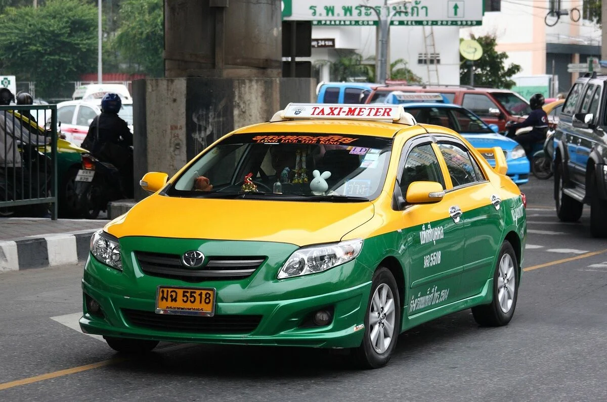

Taxi

It consequently has one of the largest proportions of taxis to people in the world. Unlike in the big Western cities, Bangkok’s taxi system is very reasonable thanks to the metre system that was recently introduced several years ago.
Taxis start at 35 Baht and thereafter 2 Baht for the first 2 km and then 2 Baht per km after that. The traffic in some areas in Bangkok can however be appalling so motorcycle taxis might be a better bet if you are only wanting to travel a short distance in Bangkok. Taxis are however air-conditioned which can make for a nice break from the ridiculous Bangkok heat.